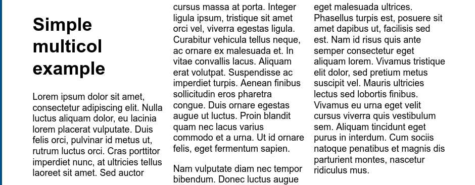
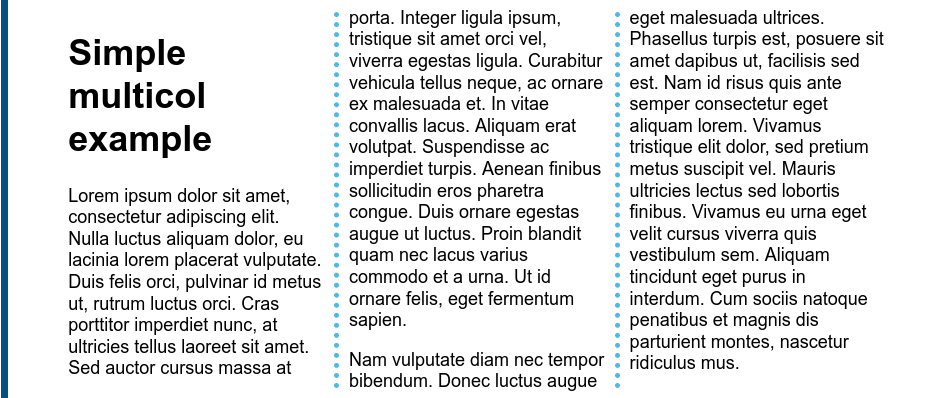

CSS 进阶——字体 颜色 多列布局
本文按照 Mozilla 贡献者基于 CC-BY-SA 2.5 协议发布的以下文章改编:
- https://developer.mozilla.org/zh-CN/docs/Learn/CSS/CSS_layout/Multiple-column_Layout
- https://developer.mozilla.org/zh-CN/docs/Learn/CSS/Styling_text/Fundamentals
本文基于 CC-BY-SA 4.0 协议发布。
再谈字体
正如你已经在你使用 HTML 和 CSS 完成工作时所经历的一样，元素中的文本是布置在元素的内容框中。以内容区域的左上角作为起点，一直延续到行的结束部分。一旦达到行的尽头，它就会进到下一行，然后继续，再接着下一行，直到所有内容都放入了盒子中。文本内容表现地像一些内联元素，被布置到相邻的行上，除非到达了行的尽头，否则不会换行，或者你想强制地，手动地造成换行的话，你可以使用 <br> 元素。
用于样式文本的 CSS 属性通常可以分为两类，我们将在本文中分别观察。
- 字体样式: 作用于字体的属性，会直接应用到文本中，比如使用哪种字体，字体的大小是怎样的，字体是粗体还是斜体，等等。
- 文本布局风格: 作用于文本的间距以及其他布局功能的属性，比如，允许操纵行与字之间的空间，以及在内容框中，文本如何对齐。
字体颜色
在 CSS 里面，指定字体颜色的是 color 属性。严格来讲，color 设置的是前景内容，设置元素背景颜色要用 background-color。
p {
color: red;
}
这段用来设置<p>中的字体颜色为红色。
字体种类
要在你的文本上设置一个不同的字体，你可以使用 font-family 属性，这个允许你为浏览器指定一个字体 (或者一个字体的列表)，然后浏览器可以将这种字体应用到选中的元素上。浏览器只会把在当前机器上可用的字体应用到当前正在访问的网站上；如果字体不可用，那么就会用浏览器默认的字体代替 default font. 下面是一个简单的例子:
p {
font-family: arial;
}
这段语句使所有在页面上的段落都采用 arial 字体，这个字体可在任何电脑上找到。
网页安全字体
网页安全字体，就是保证绝大多数设备都可以正常显示的字体。这样可以防止你的网页在别人电脑上显示的字体出问题。
实际的 Web 安全字体列表将随着操作系统的发展而改变，但是可以认为下面的字体是网页安全的。所以建议可以尽可能使用这些。
| 字体名称 | 泛型 | 注意 |
|---|---|---|
| Arial | sans-serif | 通常认为最佳做法还是添加 Helvetica 作为 Arial 的首选替代品，尽管它们的字体面几乎相同，但 Helvetica 被认为具有更好的形状，即使Arial更广泛地可用。 |
| Courier New | monospace | 某些操作系统有一个 Courier New 字体的替代（可能较旧的）版本叫Courier。使用Courier New作为Courier的首选替代方案，被认为是最佳做法。 |
| Georgia | serif | |
| Times New Roman | serif | 某些操作系统有一个 Times New Roman 字体的替代（可能较旧的）版本叫 Times。使用Times作为Times New Roman的首选替代方案，被认为是最佳做法。 |
| Trebuchet MS | sans-serif | 您应该小心使用这种字体——它在移动操作系统上并不广泛。 |
| Verdana | sans-serif |
默认字体
CSS 定义了 5 个常用的字体名称: serif, sans-serif, monospace, cursive,和 fantasy. 这些都是非常通用的，当使用这些通用名称时，使用的字体完全取决于每个浏览器，而且它们所运行的每个操作系统也会有所不同。这是一种糟糕的情况，浏览器会尽力提供一个看上去合适的字体。 serif, sans-serif 和 monospace 是比较好预测的，默认的情况应该比较合理，另一方面，cursive 和 fantasy 是不太好预测的，我们建议使用它们的时候应该稍微注意一些，多多测试。
五个名称定义如下：
| 名称 | 定义 |
|---|---|
| serif | 有衬线的字体 （衬线一词是指字体笔画尾端的小装饰，存在于某些印刷体字体中） |
| sans-serif | 没有衬线的字体。 |
| monospace | 每个字符具有相同宽度的字体，通常用于代码列表。 |
| cursive | 用于模拟笔迹的字体，具有流动的连接笔画。 |
| fantasy | 用来装饰的字体 |
字体栈
我们也常常使用逗号来分割字体，这样当第一个字体找不到的时候，会依次找下一个字体，直到找到为止。这叫字体栈。
一般情况下，我们会采取直接给 <html> 指定字体的方式来网指定字体,这样页面上的所有文字都继这个属性，然后整个页面的字体都会同时设置。
html {
font-family: "Noto Sans SC", "Source Han Sans CN", "MicroSoft YaHei", sans-serif;
/*前两个思源黑体，第三个微软雅黑，最后是无衬线类。*/
}
字体样式
字体大小
我们之前就已经讲过调整字体大小了，不过在这里我们详细讲清楚，理清一些误区。设置字体大小通常有这些方法：
px将像素的值赋予给你的文本。这是一个绝对单位， 它导致了在任何情况下，页面上的文本所计算出来的像素值都是一样的。一般不推荐使用。em设置相对父元素的字节大小，推荐使用。注意这不是直接相对浏览器本身的字节大小，而是自己的父元素。也就是如果你给一个段落设置成了1.2em，它的子元素设置1em就是相对1.2em而言的。rem相对根元素大小。这个可以避免上面提到的嵌套问题，而是直接相对浏览器本身的字节大小。
文字样式
font-style: 用来打开和关闭文本 italic (斜体)。 可能的值如下： normal : 将文本设置为普通字体 (将存在的斜体关闭) ，italic: 如果当前字体的斜体版本可用，那么文本设置为斜体版本；如果不可用，那么会将文字倾斜来模拟 italics 。你很少会用到这个属性，除非你因为一些理由想将斜体文字关闭斜体状态。
font-weight: 设置文字的粗体大小。这里有很多值可选 (比如 light, normal, bold, extrabold, black, 等等), 不过事实上你很少会用到 normal 和 bold 以外的值。其中 normal 设置正常字体，bold 设置粗体。
text-decoration: 设置/取消字体上的文本装饰 (你将主要使用此方法在设置链接时取消设置链接上的默认下划线。) 可用值为： none （取消已经存在的任何文本装饰），underline（文本下划线），overline（文本上划线） ，line-through（删除线）。
文本布局
有了基本的字体属性，我们来看看我们可以用来影响文本布局的属性。
文本对齐
text-align 属性用来控制文本如何和它所在的内容盒子对齐。可用值如下，并且在与常规文字处理器应用程序中的工作方式几乎相同：
left: 左对齐文本。right: 右对齐文本。center: 居中文字justify: 使文本展开，改变单词之间的差距，使所有文本行的宽度相同。你需要仔细使用，它可以看起来很可怕。特别是当应用于其中有很多长单词的段落时。如果你要使用这个，你也应该考虑一起使用别的东西，比如hyphens，打破一些更长的词语。
如果我们应用 text-align: center; 到一个页面的 <h1> 元素中，结果如下：

行高
line-height 属性设置文本每行之间的高，可以接受大多数单位，不过也可以设置一个无单位的值，作为乘数，通常这种是比较好的做法。无单位的值乘以 font-size (字体大小)来获得 line-height 行高）。当行与行之间拉开空间，正文文本通常看起来更好更容易阅读。推荐的行高大约是 1.5–2 (双倍间距。) 所以要把我们的文本行高设置为字体高度的 1.5 倍，你可以使用这个:
line-height: 1.5;
字母和单词间距
letter-spacing 和 word-spacing 属性允许你设置你的文本中的字母与字母之间的间距、或是单词与单词之间的间距。你不会经常使用它们，尤其是中文的网站下面，但是可能可以通过它们，来获得一个特定的外观，或者让较为密集的文字更加可读。它们可以接受大多数单位。
所以作为例子，如果我们把这个样式应用到我们的示例中的 <p> 段落的第一行：
p::first-line {
letter-spacing: 2px;
word-spacing: 4px;
}

More
以上属性让你了解如何开始在网页上设置文本，但是你可以使用更多的属性。我们只是想介绍最重要的。你也可以通过 MDN 文档去了解其他更多的属性，然后自己试着用上。
再谈颜色和背景
我们之前已经了解过颜色了，不过都没有单独拎出来讲过，所以这里给大家单独讲下。
我们在 CSS 里面用的最多的就是前景色（color）和背景色( background-color )。前景色通常用来指定文本的颜色，背景色通常用来指定块元素的背景颜色。下面是一个例子，形成了黑底灰字。
p {
color: grey;
background-color: black;
}
<p>Far far away, behind the word mountains, far from the countries Vokalia and Consonantia, there live the blind texts. Separated they live in Bookmarksgrove right at the coast of the Semantics, a large language ocean.</p>

颜色设置方式
下面列举了一系列的可用的值。至于具体要设置什么颜色，那还是自己去调色盘调着上面看下有啥好看的吧，毕竟这是美术范畴，超出计算机方面了，我也无能为力。讲的还是会比较简单，有些内容会省略不讲，有兴趣可以自己看下 MDN 的文档：（https://developer.mozilla.org/zh-CN/docs/Web/CSS/color）
颜色名
这个最简单了，具体有多少种颜色自己可以去找文档。
color: red;
color: orange;
16 进制颜色
由一个 # 打头的十六进制数字设置，符号由红色、绿色和蓝色的值组成，就是把 RGB 直接写成一个数字。
color: #090;
color: #009900;
rgb() 和 rgba()
rgb() 和 rgba() 这里两个函数在 CSS 最新标准里面是同一个东西可以指定三个 RGB 颜色值和一个可选的透明度值。不过旧的实现可能只有 rgb() 函数，而且没有透明度值。
color: rgb(34, 12, 64);
color: rgb(34, 12, 64, 0.6);
color: rgba(34, 12, 64, 0.6);
hsl()
这个好像不是特别常用，不过也是可以设置的。具体可以搜索下啥是 HSL，这里懒得讲
color: hsl(30, 100%, 50%, 0.6);
color: hsla(30, 100%, 50%, 0.6);
图片背景
虽然图片背景好像和这里没啥关系，不过既然提到背景了那也一起讲了，防止以后又要单独开章节补。
background-image 属性用于为一个元素设置一个或者多个背景图像。接受一个图片的 URL 作为参数。例如下面：
background-image:
url("https://mdn.mozillademos.org/files/6457/mdn_logo_only_color.png");
多列布局
多列布局，通常也简写为 multicol，我们将会给出多列布局的具体例子。
在下面的 HTML 里面，我们会把内容放在一个 <div> 里面，它带有一个container 类。我们会将它作为一个放置文本的容器，来进行一个展示。
比方说我们举个最简单的例子，这里的 column-count 被设置成 3 意思是三列。
.container {
column-count: 3;
}
<div class="container">
<h1>Simple multicol example</h1>
<p>节约纸张</p>
<p>同上</p>
</div>

除了列数，还可以通过指定每列的宽度。之前为了方便都是用 px 当作单位。这里也可以换成 em （一般情况下，1em 等于 16px，具体换算由浏览器决定），两者之中 em 更适合移植。
.container {
column-width: 12.5em; /*相当于 200px*/
}

浏览器将按照你指定的宽度尽可能多的创建列；任何剩余的空间之后会被现有的列平分。 这意味着你可能无法期望得到你指定宽度，除非容器的宽度刚好可以被你指定的宽度除尽。
给多列增加样式
Multicol 创建的列无法单独的设定样式。 不存在让单独某一列比其他列更大的方法，同样无法为某一特定的列设置独特的背景色、文本颜色。不过你也可以给列之间采用这样的样式：
- 使用
column-gap改变列间间隙。 - 用
column-rule在列间加入一条分割线。
以上面的代码为例，增加 column-gap 属性可以更改列间间隙：
.container {
column-width: 200px;
column-gap: 20px;
}
你可以尝试不同的值 — 该属性接受任何长度单位。现在再加入 column-rule。和你之前遇到的 border 属性类似， column-rule 是 column-rule-color 和 column-rule-style 的缩写，接受同 border 一样的单位。然后就得到了下面的效果
.container {
column-count: 3;
column-gap: 20px;
column-rule: 4px dotted rgb(79, 185, 227);
}

列与内容折断
多列布局的内容被拆成碎块。 和多页媒体上的内容表现大致一样 — 比如打印网页的时候。 当你把内容放入多列布局容器内，内容被拆成碎块放进列中，内容折断（比如断词断句）使得这一效果可以实现。
这里因为篇幅原因暂且不讲这么多，只要知道由这样的东西存在，以后设计网站的时候注意就行。